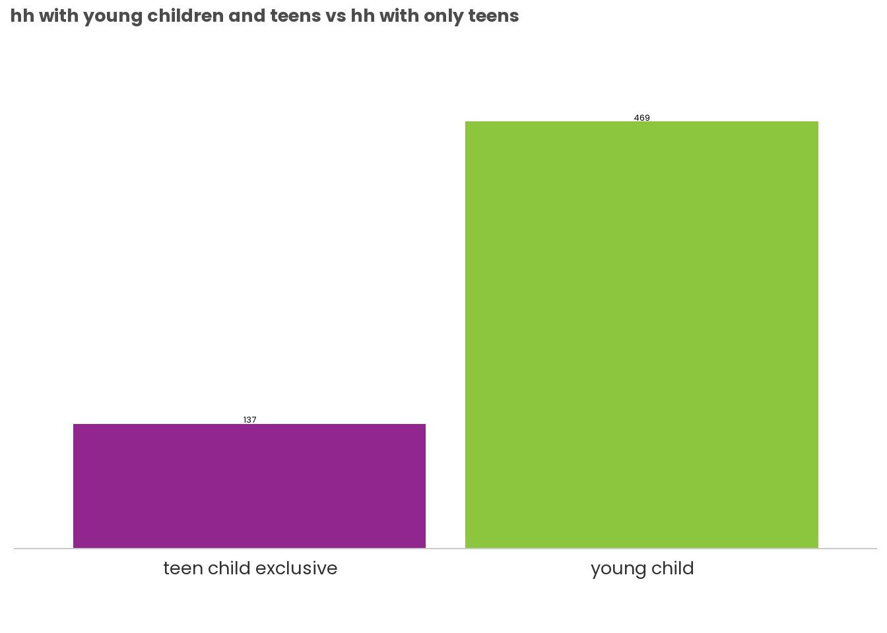
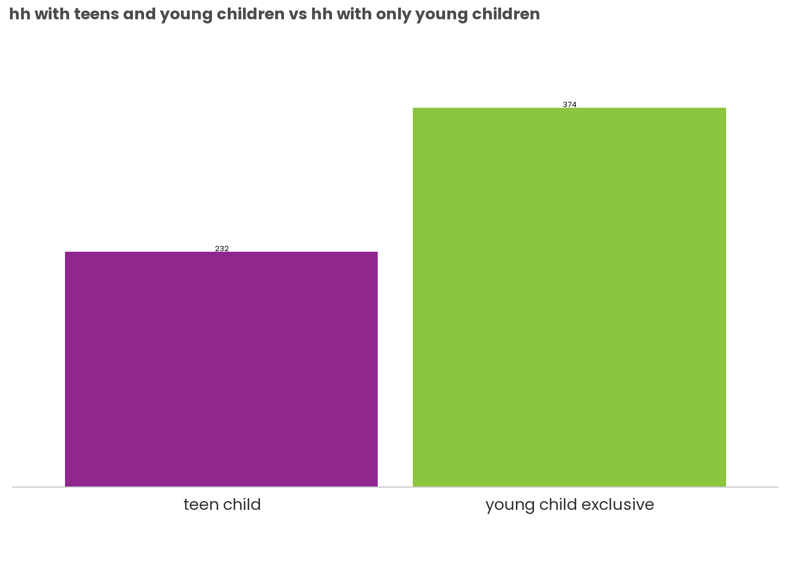
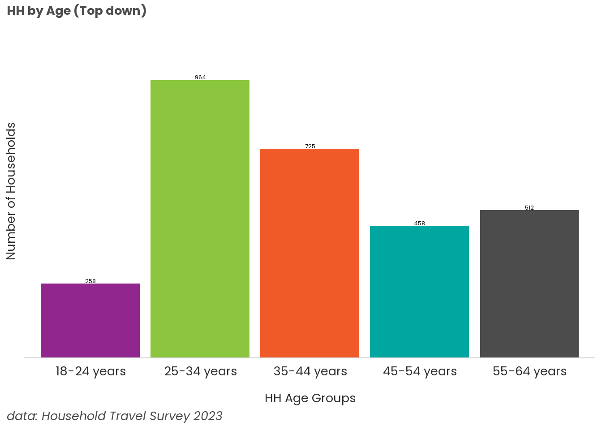
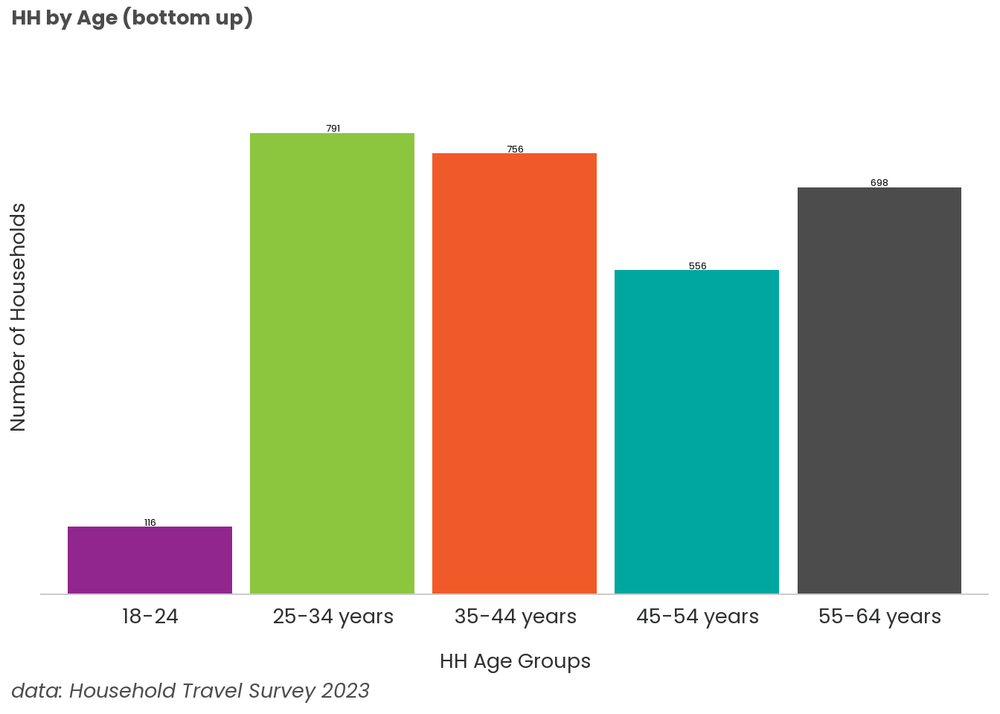
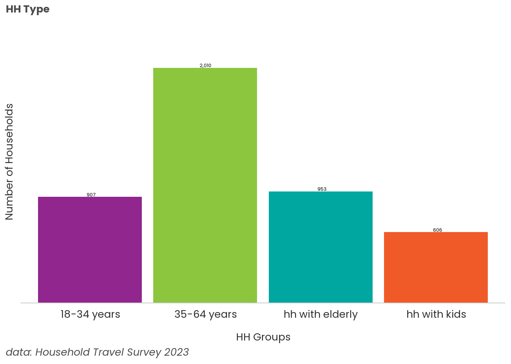

# count how many age groups a household selected
hh_id_multiple_23_age <- person %>%
group_by(hh_id) %>%
mutate(age_by_hh = n()) %>%
ungroup()
# table of a breakdown of each household's age
hh_age_bkdwn <- person %>%
# count number of people by age and household id
group_by(hh_id, age) %>%
summarise(count = n()) %>%
# long to wide format + fill NA with 0
pivot_wider(id_cols = hh_id, names_from = age, values_from = count, values_fill = 0) %>%
mutate(total_hh_members = sum(c_across(`12-15 years`:`85 years or older`))) %>%
relocate(`Under 5 years old`, .before = `12-15 years`) %>%
relocate(`5-11 years`, .before = `12-15 years`) %>%
relocate(`18-24 years`, .before = `35-44 years`) %>%
relocate(`25-34 years`, .before = `35-44 years`) %>%
relocate(`55-64 years`, .after = `45-54 years`) %>%
# mutate(hh_size_total = sum(number)) # I first need to find out the total hh for each hh size
ungroup() %>%
mutate(total_hh = n()) %>%
group_by(total_hh_members) %>%
mutate(hh_by_size_total= n(),
proportion = hh_by_size_total / total_hh) %>%
ungroup()Lifecycle Analysis
Age
Summary Knowledge
HH breakdown
1 person 44%
2 person 36%
3 person 10%
4 person 7%
5 person 2%
6 person 0.6%
7 person 0.2%
8 person 0.03%
One person HH
85+ 0.9%
75-84 years old 7.5%
65–74 years old 17%
55-64 years old 15.2%
45-54 years old 12.2%
35-44 years old 16.5 %
25-34 yeas old 24.8%
18-24 years old 6%
One Person Households
| Under 5 years old | 5-11 years | 12-15 years | 16-17 years | 18-24 years | 25-34 years | 35-44 years | 45-54 years | 55-64 years | 65-74 years | 75-84 years | 85 years or older | count | prop |
|---|---|---|---|---|---|---|---|---|---|---|---|---|---|
| 0 | 0 | 0 | 0 | 0 | 1 | 0 | 0 | 0 | 0 | 0 | 0 | 398 | 0.248 |
| 0 | 0 | 0 | 0 | 0 | 0 | 0 | 0 | 0 | 1 | 0 | 0 | 273 | 0.170 |
| 0 | 0 | 0 | 0 | 0 | 0 | 1 | 0 | 0 | 0 | 0 | 0 | 265 | 0.165 |
| 0 | 0 | 0 | 0 | 0 | 0 | 0 | 0 | 1 | 0 | 0 | 0 | 245 | 0.152 |
| 0 | 0 | 0 | 0 | 0 | 0 | 0 | 1 | 0 | 0 | 0 | 0 | 196 | 0.122 |
| 0 | 0 | 0 | 0 | 0 | 0 | 0 | 0 | 0 | 0 | 1 | 0 | 120 | 0.075 |
| 0 | 0 | 0 | 0 | 1 | 0 | 0 | 0 | 0 | 0 | 0 | 0 | 96 | 0.060 |
| 0 | 0 | 0 | 0 | 0 | 0 | 0 | 0 | 0 | 0 | 0 | 1 | 14 | 0.009 |
2 Person Households
| Under 5 years old | 5-11 years | 12-15 years | 16-17 years | 18-24 years | 25-34 years | 35-44 years | 45-54 years | 55-64 years | 65-74 years | 75-84 years | 85 years or older | count | prop |
|---|---|---|---|---|---|---|---|---|---|---|---|---|---|
| 0 | 0 | 0 | 0 | 0 | 2 | 0 | 0 | 0 | 0 | 0 | 0 | 279 | 0.210 |
| 0 | 0 | 0 | 0 | 0 | 0 | 0 | 0 | 0 | 2 | 0 | 0 | 170 | 0.128 |
| 0 | 0 | 0 | 0 | 0 | 0 | 0 | 0 | 2 | 0 | 0 | 0 | 151 | 0.114 |
| 0 | 0 | 0 | 0 | 0 | 0 | 2 | 0 | 0 | 0 | 0 | 0 | 122 | 0.092 |
| 0 | 0 | 0 | 0 | 0 | 0 | 0 | 0 | 1 | 1 | 0 | 0 | 81 | 0.061 |
| 0 | 0 | 0 | 0 | 0 | 0 | 0 | 0 | 0 | 0 | 2 | 0 | 77 | 0.058 |
| 0 | 0 | 0 | 0 | 0 | 0 | 0 | 0 | 0 | 1 | 1 | 0 | 62 | 0.047 |
| 0 | 0 | 0 | 0 | 0 | 0 | 0 | 2 | 0 | 0 | 0 | 0 | 61 | 0.046 |
| 0 | 0 | 0 | 0 | 0 | 1 | 1 | 0 | 0 | 0 | 0 | 0 | 58 | 0.044 |
| 0 | 0 | 0 | 0 | 0 | 0 | 0 | 1 | 1 | 0 | 0 | 0 | 46 | 0.035 |
3 Person Households
| Under 5 years old | 5-11 years | 12-15 years | 16-17 years | 18-24 years | 25-34 years | 35-44 years | 45-54 years | 55-64 years | 65-74 years | 75-84 years | 85 years or older | count | prop |
|---|---|---|---|---|---|---|---|---|---|---|---|---|---|
| 1 | 0 | 0 | 0 | 0 | 0 | 2 | 0 | 0 | 0 | 0 | 0 | 32 | 0.089 |
| 1 | 0 | 0 | 0 | 0 | 2 | 0 | 0 | 0 | 0 | 0 | 0 | 32 | 0.089 |
| 1 | 0 | 0 | 0 | 0 | 1 | 1 | 0 | 0 | 0 | 0 | 0 | 22 | 0.061 |
| 0 | 1 | 0 | 0 | 0 | 0 | 2 | 0 | 0 | 0 | 0 | 0 | 18 | 0.050 |
| 0 | 0 | 0 | 0 | 1 | 0 | 0 | 2 | 0 | 0 | 0 | 0 | 16 | 0.045 |
| 0 | 0 | 1 | 0 | 0 | 0 | 0 | 2 | 0 | 0 | 0 | 0 | 14 | 0.039 |
| 0 | 0 | 0 | 0 | 0 | 1 | 0 | 0 | 1 | 1 | 0 | 0 | 12 | 0.033 |
| 0 | 0 | 0 | 0 | 0 | 1 | 0 | 0 | 2 | 0 | 0 | 0 | 10 | 0.028 |
| 0 | 1 | 0 | 0 | 0 | 0 | 0 | 2 | 0 | 0 | 0 | 0 | 9 | 0.025 |
| 0 | 1 | 0 | 0 | 0 | 1 | 1 | 0 | 0 | 0 | 0 | 0 | 9 | 0.025 |
Proportions
hh_by_age <- hh_age_bkdwn %>%
mutate(`65 years or older` = rowSums(across(c('65-74 years', '75-84 years','85 years or older'))),
`Under 18 years old` = rowSums(across(c('Under 5 years old', '5-11 years',
'12-15 years', '16-17 years'))),
`75 years or older` = rowSums(across(c('75-84 years','85 years or older'))),
`18 years or older` = rowSums(across(c('18-24 years':'85 years or older')))
)How many Households with people 65+?
- 953 Households ~26% of all Households
[1] 953How many Households with children under 18?
- 606 Households ~16.5% of all Households
[1] 606How many hh with someone 65+ and under 18?
- 24 Households ~0.7%
What is the comparison of hh age 65-74 and 75+?
- 75+ 347 households ~9.5%
- 65-74 686 households (There is overlap between hh with 65-74 and 75+) ~ 18.7%
hh_by_age %>% filter(`75 years or older` != 0) %>% nrow()[1] 347a <- hh_by_age %>% filter(`65-74 years` != 0)What is the distribution of hh with children (under 18) and 1 adult, 2 adult, or 3+ adults?
71 Households with 1 adult
475 Households with two adults
60 Households with three or more adults
ans5 <- hh_by_age %>%
filter(`Under 18 years old` !=0)
ans5 %>% filter(`18 years or older` == 1) %>% nrow()[1] 71ans5 %>% filter(`18 years or older` == 2) %>% nrow()[1] 475ans5 %>% filter(`18 years or older` >= 3) %>% nrow()[1] 60What is the distribution of hh between 18 and 64 (adults)?
adult_hh1 <- hh_by_age %>%
filter(total_hh_members == 1) %>%
group_by(across(`18-24 years`:`85 years or older`)) %>%
summarise(count = n()) %>%
ungroup() %>%
arrange(desc(count)) %>%
mutate(prop = round(count / sum(count), digits = 3))
kbl(head(adult_hh1, n=10)) %>%
kable_styling(bootstrap_options = c("striped"), html_font = "Poppins")| 18-24 years | 25-34 years | 35-44 years | 45-54 years | 55-64 years | 65-74 years | 75-84 years | 85 years or older | count | prop |
|---|---|---|---|---|---|---|---|---|---|
| 0 | 1 | 0 | 0 | 0 | 0 | 0 | 0 | 398 | 0.248 |
| 0 | 0 | 0 | 0 | 0 | 1 | 0 | 0 | 273 | 0.170 |
| 0 | 0 | 1 | 0 | 0 | 0 | 0 | 0 | 265 | 0.165 |
| 0 | 0 | 0 | 0 | 1 | 0 | 0 | 0 | 245 | 0.152 |
| 0 | 0 | 0 | 1 | 0 | 0 | 0 | 0 | 196 | 0.122 |
| 0 | 0 | 0 | 0 | 0 | 0 | 1 | 0 | 120 | 0.075 |
| 1 | 0 | 0 | 0 | 0 | 0 | 0 | 0 | 96 | 0.060 |
| 0 | 0 | 0 | 0 | 0 | 0 | 0 | 1 | 14 | 0.009 |
adult_hh2 <- hh_by_age %>%
filter(total_hh_members == 2) %>%
group_by(across(`18-24 years`:`85 years or older`)) %>%
summarise(count = n()) %>%
ungroup() %>%
arrange(desc(count)) %>%
mutate(prop = round(count / sum(count), digits = 3))
kbl(head(adult_hh2, n=10)) %>%
kable_styling(bootstrap_options = c("striped"), html_font = "Poppins")| 18-24 years | 25-34 years | 35-44 years | 45-54 years | 55-64 years | 65-74 years | 75-84 years | 85 years or older | count | prop |
|---|---|---|---|---|---|---|---|---|---|
| 0 | 2 | 0 | 0 | 0 | 0 | 0 | 0 | 279 | 0.210 |
| 0 | 0 | 0 | 0 | 0 | 2 | 0 | 0 | 170 | 0.128 |
| 0 | 0 | 0 | 0 | 2 | 0 | 0 | 0 | 151 | 0.114 |
| 0 | 0 | 2 | 0 | 0 | 0 | 0 | 0 | 122 | 0.092 |
| 0 | 0 | 0 | 0 | 1 | 1 | 0 | 0 | 81 | 0.061 |
| 0 | 0 | 0 | 0 | 0 | 0 | 2 | 0 | 77 | 0.058 |
| 0 | 0 | 0 | 0 | 0 | 1 | 1 | 0 | 62 | 0.047 |
| 0 | 0 | 0 | 2 | 0 | 0 | 0 | 0 | 61 | 0.046 |
| 0 | 1 | 1 | 0 | 0 | 0 | 0 | 0 | 58 | 0.044 |
| 0 | 0 | 0 | 1 | 1 | 0 | 0 | 0 | 46 | 0.035 |
# hh with teens vs younger children
# make a chart
ans5 <- hh_by_age %>%
filter(`Under 18 years old` !=0)
# Create a logic where you split hh first on if they have kids under 12
# count the rest of hh with kids above 12
# Then compare that with hh with only kids under 12 and hh with kids above 12 and kids under 12
# Bottom Up approach
ans5_test <- ans5 %>%
mutate(kid_age = case_when(`Under 5 years old` != 0 ~ "young child",
`5-11 years` != 0 ~ "young child",
TRUE~"teen child exclusive")) %>%
group_by(kid_age) %>%
summarize(count = n()) %>%
ungroup()
static_column_chart(ans5_test, x='kid_age', y='count', fill='kid_age') +
labs(title = "hh with young children and teens vs hh with only teens") +
theme(axis.text=element_text(size=20), axis.title=element_text(size=20), plot.title=element_text(size=20), plot.caption = element_text(size=20))
# Top Down Approach
teen_hh <- ans5 %>%
mutate(kid_age = case_when(`12-15 years` != 0 ~ "teen child",
`16-17 years` != 0 ~ "teen child",
TRUE~"young child exclusive")) %>%
group_by(kid_age) %>%
summarize(count = n()) %>%
ungroup()
static_column_chart(teen_hh, x='kid_age', y='count', fill='kid_age') +
labs(title = "hh with teens and young children vs hh with only young children") +
theme(axis.text=element_text(size=20), axis.title=element_text(size=20), plot.title=element_text(size=20), plot.caption = element_text(size=20))
# hh
# filter to just adult hh (between 18-64)
# categorize the number of hh containing 18-24 year olds and so on and so forth
summary <- person %>%
filter(age %in% c("18-24 years", "25-34 years", "35-44 years", "45-54 years", "55-64 years")) %>%
group_by(hh_id) %>%
summarise(all_hh_age = paste(sort(unique(age)), collapse = "; ")) %>%
ungroup() %>%
mutate(top_down = case_when(grepl("18-24", all_hh_age)~"18-24 years",
grepl("25-34", all_hh_age)~"25-34 years",
grepl("35-44", all_hh_age)~"35-44 years",
grepl("45-54", all_hh_age)~"45-54 years",
TRUE~"55-64 years"),
bottom_up = case_when(grepl("55-64", all_hh_age)~"55-64 years",
grepl("45-54", all_hh_age)~"45-54 years",
grepl("35-44", all_hh_age)~"35-44 years",
grepl("25-34", all_hh_age)~"25-34 years",
TRUE~"18-24"))
top_summary <- summary %>%
group_by(top_down) %>%
summarise(count_age = n()) %>%
ungroup()
bottom_summary <- summary %>%
group_by(bottom_up) %>%
summarise(count_age = n()) %>%
ungroup()
static_column_chart(top_summary, x='top_down', y='count_age', fill='top_down') +
labs(title = "HH by Age (Top down)", caption = "data: Household Travel Survey 2023", x="HH Age Groups", y="Number of Households") +
theme(axis.text=element_text(size=20), axis.title=element_text(size=20), plot.title=element_text(size=20), plot.caption = element_text(size=20))
static_column_chart(bottom_summary, x='bottom_up', y='count_age', fill='bottom_up') +
labs(title = "HH by Age (bottom up)", caption = "data: Household Travel Survey 2023", x="HH Age Groups", y="Number of Households") +
theme(axis.text=element_text(size=20), axis.title=element_text(size=20), plot.title=element_text(size=20), plot.caption = element_text(size=20))
| hh_type | count_age |
|---|---|
| 18-34 years | 907 |
| 35-64 years | 2010 |
| hh with kids | 606 |
| hh with elderly | 953 |
